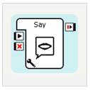
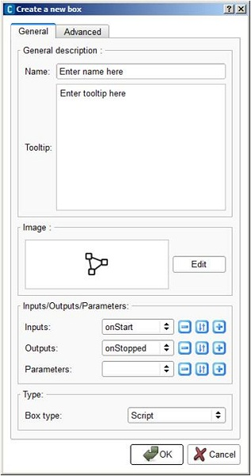

Box¶
What is a box¶
A box is a fundamental object in Choregraphe as everything you manipulate with this software rests on boxes.
A box can be a simple elementary action (Say box for example) as well as a very complex application (room exploration for example). However it is the basic element to create behaviors.
Note
You can have a description and some tips about a box in the lower part of the box library panel when you select the box in the Box libraries panel or in a tooltip displayed by passing above the box in the Flow diagram Panel.
Inputs/outputs¶
In order to communicate with other boxes and to be started or stopped, a box has:
The inputs and outputs of boxes are connected through links on an event based communication logic.
3 types of boxes¶
There are three different types of box:
- Script box which includes a script.
- Flow diagram box which includes a script and a flow diagram.
- Timeline box which includes a script and a Timeline.
Optional components¶
| Component | Usage |
|---|---|
| Parameters | If you want to change or create some settings about the action made by a box,
it may be useful to have a look at its parameters using the For example, the Say box has a voice shape parameter which changes the voice used by NAO to say the text. |
| Attached file | A box may need some additional files (a music for a dance for example), in order to package the box with its needed files, you can attach them to the box. |
| Resources | A box may also need to ensure the availability of resources and manage conflicts with other boxes which could use the same resources. For example a box to walk and a box to dance both use NAO’s legs. |
| Plugin | A box can have a plugin which basically enables you to make actions directly on the frontage of the box. |
 parameter button.
parameter button.How to create a box¶
To create a box:
| Step | Action |
|---|---|
| Right click on your diagram wherever you want to create the box. | |
Click on Add a new Box in the context menu. The Create a new box menu is displayed.  |
|
| Define a Name and a Tooltip for your box. | |
| Optional: set the picture to recognize it among other boxes in your diagram. | |
Optional: set parameters, inputs and outputs that can be manipulated by the box. For further details about parameters, see How to add/remove inputs, outputs, parameters in a box section. |
|
| Select a Type. | |
Click on Ok. The created box is displayed on the diagram. |
Box Edition widget¶
When you edit or create a box, the following widget is displayed:

General description¶
Here you can specify:
the name of your box.
the brief description of what it does in the field Tooltip.
This description appears:
- in the lower part of the box library panel when you select the box in the box library or
- in a tooltip displayed by passing above the box in the flow diagram.
Image¶
Here you can specify:
an image by clicking on Edit and selecting one or several image(s) for your box.
The image is displayed on the front of your box in the flow diagram.
Note
You can choose several images to have a complete graphical description of what it does. But you should know that only the first image is displayed beside the box name in a box library.
Inputs/Outputs/Parameters¶
Here you can add, edit or remove inputs, outputs and parameters to the box:
| The button ... | Allows you to ... |
|---|---|

|
Remove the selected input, output or parameter. |

|
Edit the selected input, output or parameter through the input, output or parameter edition widget. |

|
Add a new input, output or parameter through the input, output or parameter edition widget. |
Type¶
Here you can specify the type of your box: Script, Timeline or Flow diagram.